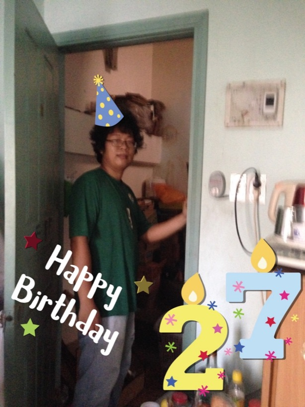

Gìn giữ
Gia đình giữ cho những dòng chữ của Tin luôn ở đây, nguyên vẹn như Tin đã viết.
Nhà của Tin · 1991 → mãi về sau
Tin yêu công nghệ, yêu học hỏi và luôn tò mò về thế giới. Gia đình giữ lại Nhàn Thoại ở đây — để mọi người cùng đọc, cùng khám phá, và cùng tiếp tục những điều Tin đã bắt đầu.
Nguyễn Hồng Phúc (Tin) · 04/02/1991 – 18/12/2025
Album gia đình
Vài tấm ảnh mà gia đình muốn giữ lại.

Quyển sách của Tin
Tin tự giới thiệu quyển sách là “sưu tầm, trích dịch, bình chú và chém gió là chính”. Hai trăm mục để đọc thong thả, lúc nào tò mò thì ghé.
Lời quê chắp nhặt dông dài,
Mua vui cũng được một vài trống canh. Nguyễn Du — Truyện Kiều · câu Tin dẫn lại trong sách
Khám phá
Chọn một chủ đề hoặc một cái tên, rồi xem Tin đã viết gì về nó trong sách.
chữ càng to, Tin càng nhắc nhiều · chạm vào một chữ để xem Tin viết gì
triết gia, nhà văn, họa sĩ truyện tranh, phim ảnh
Giá trị
Tin để lại những dòng chữ này như một hạt giống. Gia đình sẽ cùng nhau gìn giữ, và tiếp tục tạo ra những điều tốt đẹp từ đó.
Gia đình giữ cho những dòng chữ của Tin luôn ở đây, nguyên vẹn như Tin đã viết.
Để bạn bè, và những thế hệ sau trong gia đình, có thể đọc và tò mò như Tin đã từng.
Từ những điều Tin bắt đầu, gia đình sẽ tiếp tục tạo ra những giá trị mới trong tương lai.